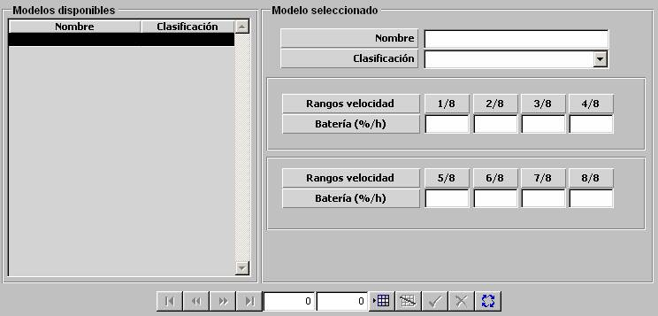

Consumo de Batería de Submarinos

Los modelos de Consumo de Batería de Submarinos se parametrizan mediante una tabla en la que se introducen los valores de Consumo de Batería para los siguientes rangos de velocidad de la unidad, expresados en fracciones de la velocidad máxima de la unidad:
0 – 1/8, 1/8 – 2/8, 2/8 – 3/8, 3/8 – 4/8, 4/8 – 5/8, 5/8 – 6/8, 6/8 – 7/8, 7/8 – 1
Esta tabla es aplicable para el cálculo del consumo de batería de Submarinos cuando el método de propulsión que utilicen sea Baterías.
Descripción de los parámetros:
Batería: Tanto por ciento de batería consumido por el submarino cada hora, según el rango de velocidad en cada momento.
Unidades: % / hora
Rango: 0 - 99.99
Ejemplo:
Si Batería = 0 ⇒ no consume batería.
Si Batería = 99.99 ⇒ agota batería inmediatamente.